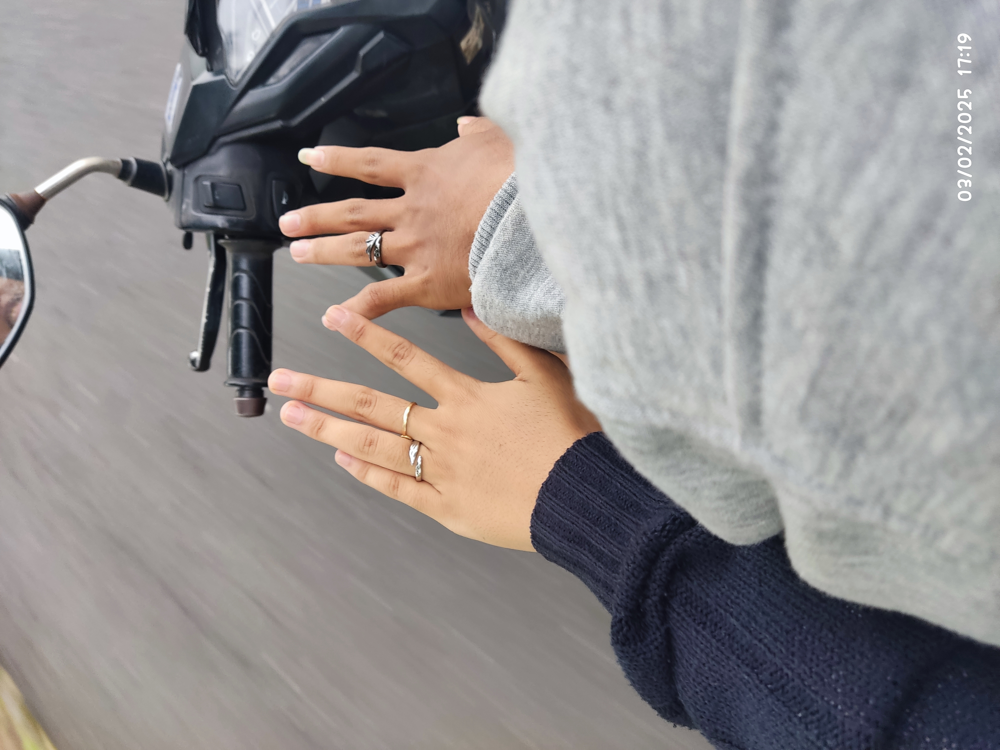
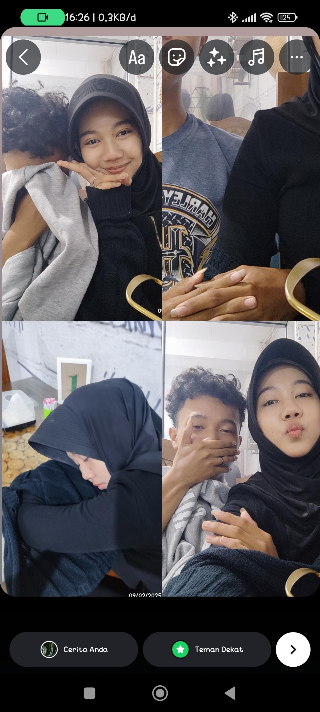

HAPPY BIRTHDAY SAYANGKU
Selamat Ulang tahun cintaaa, selamat yaaa sekarang udah umur 18 tahun, tidak terasa kita udah tumbuh dan berproses bareng mulai dari kelas 10, dan udah hampir 5 tahun hubungan ini kita jalanin :)
Di sini aku mau bagiin semua kenangan yang udah kita jalanin selama 2025 ini, melihat kembali dalam 1 tahun ini kita jalani

24 Januari 2025
aku ga begitu inget wktu itu ku cari cari di wa pun ga ketemu, yang pasti wktu itu hp kamu yg lama rusak trs blm gnti ke hp baru, trus akhirnya kamu pergi kerumahku buat bilang klo hp kmu rusak
3 Februari 2025
Aku ngasih kamu cincin buat kita kopelan❤ Tapi sekarang aku tak tau kemana cincin ku dan suda hilang 😢😢
9 Februari 2025
Kita makan seblak lalu foto-foto, masi banyak sebenernya fotonya🤞🎉
26 Juni 2025
kamu ngasih kado ultah ke aku berupa dompet sama parfum 😘😘😍

13 Juli 2025
Kamu tiba tiba bilang mau kerumahku secara mendadak, trus akhirnya aku ngasi kamu jajan deeh 🤍

21 Juli 2025
Kita makan Bakso Sesuai Requestan kamu 💋💋

5 Agustus 2025
kita main roblox bareng, muncak bareng, masih bnyk fotonya cmn ak pilih ini karna baju nya udah couplean😘😘😘

6 Oktober 2025
selesai aku interview ak ngajak jalan jalan kamu, kita ke alkid lalu jajan bareng

12 Oktober 2025
Kita ke pantai di gunung kidul, waktu itu kamu ngajak buat liburan ke pantai

18 Oktober 2025
Kita photobox lalu nyetak fotonya, fotonya masih ada di dompet aku yang mana dompet nya di kasi dari kamu 💕

19 Oktober 2025
First Time kita bobo bareng 😏😏😜

1 November 2025
another bobo bareng lagi, entah brp kali kita bbo bareng, tp entah knp bbo sama kamu rasanya emang nyaman hihi 😚😚

3 Desember 2025
Kita ke Alkid trs Bingung akhirnya kamu foto foto dehh sama aku

9 Desember 2025
Ululululuuluullululu fotooo cilaaaa 😚😚😙